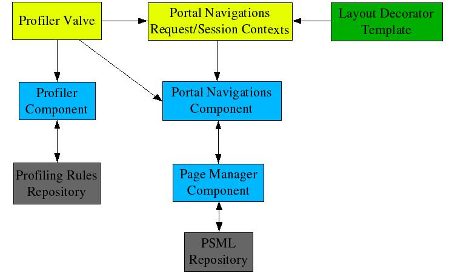

This document outlines a high to medium level design for the Portal Site component. This component is proposed as the resolution to JIRA issue: JS2-69 Finalizing Portal Navigation using the Profiler.
Generally speaking, the Portal Site component is to use the underlying Page Manager component and Profile Locators generated by the Profiler to create various views of the portal site that can be rendered by the Layout Decorators. The views are composed of profiled reflections of the portal site model comprised of folders, pages, links and other documents, (PSML content). The Portal Site component is responsible for building and managing these views, (i.e. menu, nested menu, separator, and option elements), globally and per request as necessary.
The Portal Site component is also to interpret request URLs processed by the J2 request pipeline and select PSML pages and folders for display in the portal. Generation of the menu based navigation URLs requires the inverse mapping functionality. The Portal Site component utilizes Profile Locators to perform the URL to PSML content mapping.
Existing navigation and URL mapping capabilities currently implemented in the Page Manager components will be deprecated and replaced by the Portal Site component.
The following requirements have been gathered from the JS2-69 JIRA issue and other email list sources.
The Portal Site component is responsible for mapping request URLs to underlying PSML content and constructing menu and option views that can be used to navigate to all accessible content for the end user.
In addition to existing page relative menu and option creation, this component must support a simple static menu definition capability that can scale effectively for all portal sites.
Menu definitions should include simple options lists, regular expression wild card options, and depth controlled recursive menu/option PSML reflection.
Menu definitions should be inherited along the profiled folder hierarchy to implement global defaulting and folder specific override capabilities.
Menu definitions must support nested menus and be capable of capturing sufficient information to drive localized pull down menus, (i.e. DHTML javascript site navigation menus).
Menu definitions and this component must provide a method of specifying and generating "bread crumb" navigational aids for menu options.
The Portal Site component must return the current PSML content page and folder within in a logical content hierarchy that can be navigated directly by the Layout Decoration Templates and that reflects the default menu view of the site.
The existing DocumentSet functionality is to be subsumed and deprecated by the menu definition capabilities.
Existing navigations styles must be supported, specifically the page relative "back", "page tabs", "folders", and "additional links" elements.
Existing Portal Site component functionality should be extracted out of Page Manager implementations to promote component reuse and configuration.
The Portal Site component must utilize the standard Page Manager interface to insulate it from various PSML and access security implementations
Folder default page logic and associated history state should be implemented and maintained by the Portal Site component and/or its J2 integration objects.
Global and request specific caching must be implemented to significantly reduce runtime costs of maintaining view elements and must be reset or adjust to changes in the underlying PSML content.
The Portal Site component should compute and cache various content hierarchies and menu views latently; that is only when explicitly requested from the Layout Decorator Templates.
The Portal Site component is instantiated within the J2 Component Architecture, (Spring), and is integrated into the J2 request pipeline and request contexts.
While the bulk of the functionality of the Portal Site component is to be modularized within the pluggable component itself, two other integration objects are required. The existing Profiler Valve will be extended to attach the Portal Site component to the request pipeline; references within the valve to the Page Manager component will be deprecated by this implementation. The valve will also instantiate and/or update the Portal Site Request Context and Portal Site Session Context objects. These objects are intended to maintain request state for later use by the Layout Decorator Templates and session history for use by the Portal Site component. The request context replaces the existing Profiled Page Context object that is currently referenced within the Layout Decorator Templates using the $site variable.
Figure 1 illustrates the basic relationship between the Portal Site component, its contexts, and other existing J2 components.

Figure 1, Components and
Integration Objects
Profiler Valve: instantiates the Portal Site request context with request specific information; retrieves current PSML page and folder selection from the Portal Site request context and injects results into the J2 request context.
Portal Site Request Context: encapsulates request specific state; forwards requests from the Profiler valve and Layout Decorator template to the Portal Site component with the relevant context information; caches request specific results for the Portal Site component.
Portal Site Session Context: maintains default page history for user session used by the Portal Site component to select default pages for folder requests.
Layout Decorator Template: accesses and renders PSML content and view menus/options retrieved from the Portal Site request context; the Portal Site component computes and caches information requested by the templates.
Portal Site Component: accesses the physical PSML content hierarchy using the Page Manager component; selects the current PSML page and folder content, maintaining a logical content hierarchy; generates profiled menu and option views of the PSML site content; caches computed menu views to maximize reuse between requests and sessions.
Page Manager Component: provides PSML access and security implementations; notifies Portal Site component of changes in the PSML content.
Profiler Component: existing component that generates Profile Locators for the current request using defined profiling rules for the user.
The high level interaction between these components and the host J2 architecture during a single portal request can be summarized as follows:
The J2 request pipeline invokes the Profiler Valve.
The valve creates a set of Profile Locators associated with the end user and the request being processed using the Profiler component.
If necessary, the valve creates the Portal Site Session Context object in the user's J2 portal session context.
The valve instantiates the Portal Site Request Context object in the J2 request context with the current request, Profile Locators and session context.
The valve then queries the context object for the PSML page and folder to insert into the J2 request context.
To return the appropriate PSML page and folder for the request, the context object queries the Portal Site component with the request and Profile Locators.
The Portal Site component maps the request, Profile Locators, and session default page history into a page and folder from the an appropriate logical content hierarchy derived from the PSML accessed via the Page Manager component.
The logical content hierarchy is cached in the Portal Site component for use in computing menu views or subsequent page and folder queries. Cached content hierarchies are aged using a LRU algorithm or flushed by PSML change notification events received from the Page Manager component.
Resulting logical content page and folder mappings are used by the request context to update the session context default page history while returning the mapping results to the valve.
When the execution of the J2 request pipeline reaches page rendering, the Layout Decorator template is invoked with the context object retrieved from the J2 request context.
The template then accesses the PSML page and folder and/or the menu views via the context object and again forwards these queries to the Portal Site component along with the saved request and Profile Locators.
The Portal Site component selects and computes the requested menu views using the the cached logical content hierarchy and returns the results through the context object to the templates.
Computed menu views are cached in the Portal Site component for subsequent menu view queries. Cached menu views are aged using a LRU algorithm or flushed by change notifications.
The following PSML Menu Definition is used to define the named menu views to be provided to the Layout Decoration Templates by the Portal Site component. Multiple menu views, (including all standard menu views made available via the existing Profiled Page Context object), are managed by this component. The Menu Definitions are specified in folder.metadata PSML documents. As with other PSML content, the definitions made available for a requested portal page are inherited and/or overridden by name from the current and parent folders. The request Profile Locators are used to aggregate Menu Definitions by name as would be done with the folders they appear in.
Defines a menu or nested menu within a menu.
Attributes:
name - identifies menu name for retrieval from template code and/or menu reference; [required for top level nodes: ignored otherwise]
options - specifies document path for this menu and/or default content elements if not included as explicit children; multiple option paths can be specified as a comma separated list and/or regexp patterns; relative paths interpreted as relative to current folder; special patterns, '~' or '@', can be used to reference the current page; [default: none]
depth - specifies deep inclusion of documents from option roots, (<0 specifies infinite depth); [default: 0]
paths - boolean flag to indicate ordered path options to option value from root; [default: false]
regexp - specifies wild card processing be performed on option value; [default: false]
profile - specified name of Profile Locator to be used when evaluating option value or the default profile value for options and nested menus; specifying '*' forces the acceptance of all Profile Locator names if parent menus select a name; [default: none]
order - comma separated list of regexp patterns matched against list or regexp menu options path values to determine order of matched options; this attribute will be applied as a default options value for any options children, but is not used to reorder multiple options children matches; if not specified, multiple options are included in the order returned by the underlying Page Manager component implementation; option paths not matched by this attribute are appended after ordered matches; [default: none]
skin - optional template defined layout hint and the default skin value for options and nested menus; [default: none]
Children:
title - specifies default locale-independent title for the menu; [1, optional]
short-title - specifies default locale-independent short title for the menu; [1, optional]
metadata - additional meta data specified for the menu, normally used to specify locale-specific titles; [N, optional]
options - specifies content elements for this menu; [N, optional]
menu - nested menu contained in this menu; [N, optional]
separator - specifies text elements for this menu; [N, optional]
include - specifies a menu or menu options to be included in this menu; [N, optional]
exclude - specifies menu options to be excluded from this menu; [N, optional]
Defines a single or multiple options within a menu.
Attributes:
depth - specifies deep inclusion of documents from option value roots, (<0 specifies infinite depth); [default: 0]
paths - boolean flag to indicate ordered path options to option value from root; [default: false]
regexp - specifies wild card processing be performed on option value; [default: false]
profile - specified name of Profile Locator to be used when evaluating option value; specifying '*' forces the acceptance of all Profile Locator names if parent menus select a name; [default: none]
order - comma separated list of regexp patterns matched against list or regexp options path values to determine order of matched options; if not specified, multiple options are included in the order returned by the underlying Page Manager component implementation; option paths not matched by this attribute are appended after ordered matches; [default: none]
skin - optional template defined layout hint; [default: none]
Children:
[text] - options value; multiple option paths can be specified as a comma separated list and/or regexp patterns; relative paths interpreted as relative to current folder; special patterns, '~' or '@', can be used to reference the current page; [required]
Includes another menu's options or nests a menu within a menu.
Attributes:
nest - boolean flag that controls whether the specified menu is to be nested; [default: false]
Children:
[text] - identifies included menu name; circular inclusions are suppressed; [required]
Excludes another menu's options or nested menus if they appear above within a menu.
Children:
[text] - identifies excluded menu name; circular exclusions are suppressed; [required]
Defines a separator to be included if options or nested menus appear below within a menu.
Attributes:
skin - optional template defined layout hint; [default: none]
Children:
title - specified default locale-independent title for the separator; [1, optional]
metadata - additional meta data specified for the separator text and title, normally used to specify locale-specific text; [N, optional]
text - specified default locale-independent separator text; [1, optional]
[text] - specified default locale-independent separator text; [1, optional]
A simple menu definition:
<menu name="simple">
<options>/some-top-page.psml,/custom/some-other-page.psml</options>
</menu>
A top level menu definition that contains all site content down 2 levels deep with DHTML javascript pull down rendering preferred:
<menu name="top-2-levels" options="/" depth="2" skin="dhtml-pull-down"/>
A menu comprised of all top level pages profiled by user role:
<menu name="top-role-pages" regexp="true" options="/*" profile="roles"/>
A menu used to display navigational "bread crumbs" paths:
<menu name="bread-crumbs" options="./" paths="true"/>
A complex nested menu definition:
<menu name="top-custom">
<title>Top Menu</title>
<metadata name="title" xml:lang="fr">Haut</metadata>
<options regexp="true" profile="groups">/group-pages/*</options>
<menu options="/" profile="page">
<separator>
<text>-- Top Pages --</text>
<title>Top Pages</title>
</separator>
<options regexp="true">/*</options>
<separator>
<title>Custom Pages</title>
</separator>
<options depth="2">/custom-folder/</options>
</menu>
<exclude>top-role-pages</exclude>
<separator>More Top Pages</separator>
<include nest="true">top-role-pages</include>
</menu>
The following standard menu definitions are available for all pages and are intended to replace the existing Profiled Page Context page relative navigation elements. These definitions can be overridden by specifying custom versions of these menus in folder.metadata PSML documents with the same name. Standard and custom menu definitions and views are segregated to facilitate iteration over custom menu definitions.
<menu name="back" options="../"/>
<menu name="pages" regexp="true" options="*.psml"/>
<menu name="navigations">
<separator>Folders and Pages</separator>
<options regexp="true">./*/</options>
<include>page-navigations</include>
<separator>Additional Links</separator>
<options regexp="true">/*.link</options>
</menu>
Document Set PSML support is to be removed as part of the Portal Site component implementation. Here is a PSML tag/attribute mapping that can be used to convert the *.ds documents into the Menu Definition tags in the folder.metadata files:
|
Document Set |
Menu Definition |
|---|---|
|
/document-set |
/menu |
|
/document-set/title |
/menu/title |
|
/document-set/metadata |
/menu/metadata |
|
/document-set/profile-locator |
/menu/@profile, /menu//option/@profile |
|
/document-set/document-path |
/menu/@option, /menu//option |
|
/document-set/document-path/regexp |
/menu/@regexp, /menu//option/@regexp |
|
/document-set/security-constraints |
N/A |
Table 1, Document Set to Menu Definition Conversion
The following public interfaces and methods will be developed, modified, or deprecated from component and other object instances as part of the Portal Site component implementation.
PortalSiteSessionContext
createSessionContext()
PortalSiteRequestContext
createRequestContext()
void
setProfileLocators(Map profileLocators)
void
setSessionContext(PortalSiteSessionContext context)
Page
getPage()
Folder getFolder()
Folder getRootFolder()
Set
getStandardMenuNames()
Set getCustomMenuNames()
Menu
getMenu(String name)
Map getLocators()
NodeSet
getSiblingPages()
Folder getParentFolder()
NodeSet
getSiblingFolders()
NodeSet getRootLinks()
Node getParent()
Node
getParent()
NodeSet getFolders()
Folder getFolder(String
name)
NodeSet getPages()
Page getPage(String name)
NodeSet
getLinks()
Link getLink(String name)
PageSecurity
getPageSecurity()
NodeSet getAll()
String
getElementType()
Menu getParentMenu()
String getTitle()
String
getTitle(Locale locale)
String getShortTitle()
String
getShortTitle(Locale locale)
GenericMetadata getMetadata()
String
getSkin()
String
getName()
String getUrl()
boolean isHidden()
boolean
isSelected(PortalSiteRequestContext context)
List
getElements()
MenuElement
getSelectedElement(PortalSiteRequestContext context)
String
getType()
String getUrl()
boolean isHidden()
boolean
isSelected(PortalSiteRequestContext context)
String
getText()
String getText(Locale locale)
public ProfiledPageContext createProfiledPageContext(Map locators) [delete]
void invoke(RequestContext request, ValveContext context)
void
addPageManagerEventListener(PageManagerEventListener listener)
void
removePageManagerEventListener(PageManagerEventListener
listener)
void computeProfiledPageContext(ProfiledPageContext
pageContext) [delete]
DocumentSet getDocumentSet(String name)
[delete]
void
documentChanged(PageManagerEvent event)
void
folderChanged(PageManagerEvent event)
Document
getDocument()
Folder getFolder()
NodeSet
getDocumentSets() [delete]
DocumentSet getDocumentSet(String
name)[delete]
The DocumentImpl and FolderImpl classes are proxies for concrete Document and Folder PSML instances returned by the Page Manager component. Simple delegation stubs are not listed here. The methods listed are overridden simply to arrange the underlying PSML in a profiled logical content hierarchy.
The MenuElements class is a base class for Menu, Option, and Separator.
Because the ProfiledPageContext implementation is to be subsumed by PortalSiteRequestContext, the createProfiledPageContext() method in Profiler is obsolete and will be removed along with the interface and implementation.
Document Sets are to be replaced in this implementation with named menus, so access methods in PageManager and Folder are to be removed.
The PageManagerEventListener listener interface and the PageManagerEvent notification event class are extensions to the Page Manager component to allow the Portal Site and other components to subscribe to PSML change notification events. Events required to expire and refresh the Portal Site component menu views and logical content hierarchy caches will be added for this implementation.
Velocity templates are the preferred implementation used by the J2 decorators. The Portal Site Request Context object API is directly accessible using the $site Velocity context variable. The $site variable currently exports the Profiled Page Context implementation. Even though a compatibility API is being supported by the Portal Site request context, the following conversion for the commonly used Profiled Page Context methods could be applied to existing Layout Decorator templates. Both PSML folder/page and menu/option styles are supported for many of the existing navigation accessors.
|
ProfiledPageContext method |
PortalSiteRequestContext method |
|---|---|
|
$site.page, $site.getPage() |
(supported) |
|
$site.folder, $site.getFolder() |
(supported) |
|
$site.siblingPages, $site.getSiblingPages() |
$site.folder.pages, $site.getFolder().getPages(), $site.getMenu("pages").getElements() |
|
$site.parentFolder, $site.getParentFolder() |
$site.folder.parent, $site.getFolder().getParent(), $site.getMenu("back").getElements().get(0) |
|
$site.siblingFolders, $site.getSiblingFolders() |
$site.folder.folders, $site.getFolder().getFolders(), $site.getMenu("navigations").getElements() |
|
$site.rootLinks, $site.getRootLinks() |
$site.rootFolder.links, $site.getRootFolder().getLinks(), $site.getMenu("navigations").getElements() |
|
$site.getDocumentSet($name) |
$site.getMenu($name) |
|
$site.getDocumentSetNodes($name) |
$site.getMenu($name).getElements() |
|
$site.documentSetNames, $site.getDocumentSetNames() |
$site.customMenuNames, $site.getCustomMenuNames() |
Table 2, Profiled Page Context to Portal Site Request Context Conversion
Here is an example of how the Portal Site menu views could be used to generate a "bread crumbs" navigational aid within a Velocity Layout Decorator template.
This example assumes that the following menu definition appears in a folder.metadata within the PSML content:
<menu name="bread-crumbs" option="./" paths="true"/>
The following Velocity fragment would generate a series of HTML anchor tags that would render the menu options into the familiar series of links within the portal layout:
<div class="BreadCrumbs">
#foreach($option in $site.getMenu("bread-crumbs").getElements())
#if($option.getType() == "folder")
<span>
<a href="$jetspeed.getAbsoluteUrl($option.url)"
title="$option.getTitle($preferredLocale)"
class="BreadCrumbsLink">
$option.getShortTitle($preferredLocale)
</a>
</span>
#end
#end
</div>
In order for the Portal Site component to perform reasonably, aggressive caching must be implemented to maximize reuse within and across sessions. In addition, request information and intermediate results, (those, for example, related to profiling), are cached in the Portal Site request context object. A catalog of the high level state managed by the components and integration objects is outlined here.
portal request URL
logical content search paths
Portal Site session context
logical default page path cache by logical folder path
logical content hierarchies cache by logical content search paths
custom menu names cache by logical content search paths and logical folder path
menu definitions cache by logical content search paths, menu name, and logical folder path
menu views cache by logical content search paths, menu name, and logical folder path
The logical content search paths are constructed by the Profile Locators which are generated by the Profiler component based upon the end user's profiling rules.
The logical content hierarchies are made up of FolderImpl and DocumentImpl proxies constructed using specific logical content search paths.
The logical folder path is the effective request path to a folder in logical content hierarchies.
The logical default page path is the effective request path to the historical default page in logical content hierarchies.
The menu descriptions are references to PSML objects defined in PSML folder content located via FolderImpl proxies in logical content hierarchies.
The menu views are composed of Menu, Option, and Separator objects instantiated from menu definitions defined from folders in logical content hierarchies.